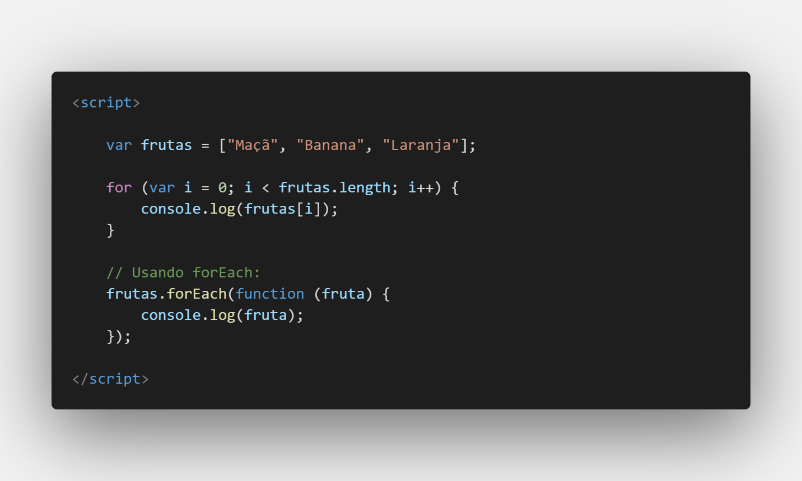
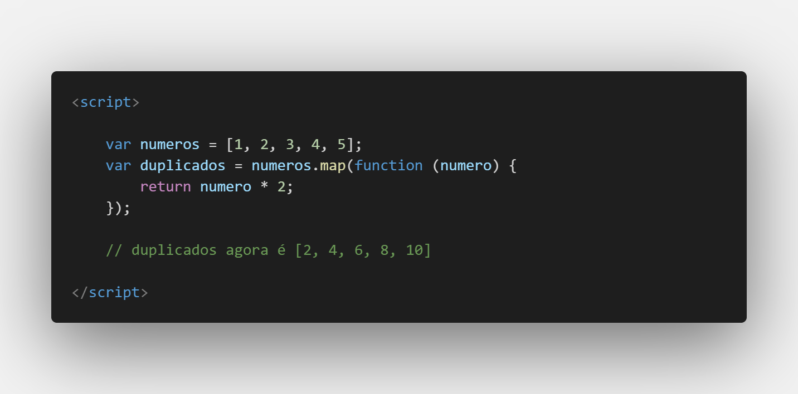
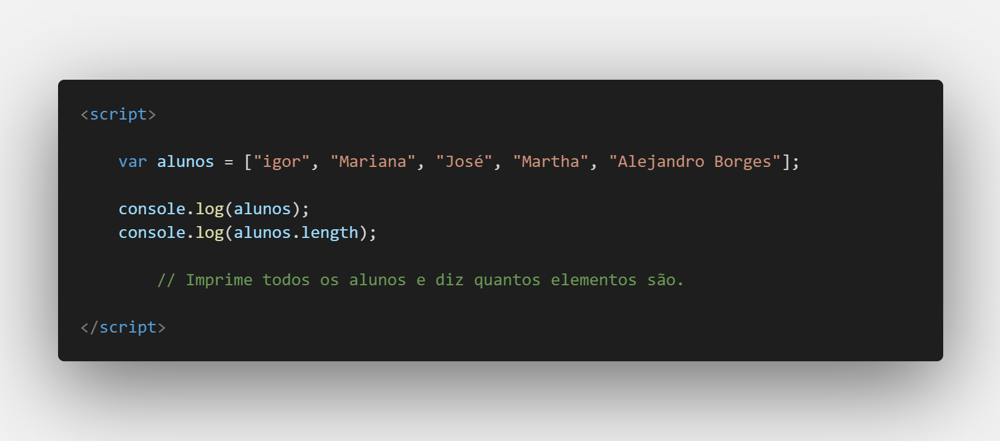

Aula 17/26 - Arrays
Um array é uma estrutura de dados que permite armazenar uma coleção ordenada de valores. Esses valores podem ser de qualquer tipo de dado, como números, strings, objetos ou até mesmo outros arrays. Os arrays são muito versáteis e amplamente usados para armazenar e manipular conjuntos de dados.
Aqui estão os conceitos fundamentais sobre arrays em JavaScript:
Declarando um Array:
Você pode criar um array de várias maneiras. A forma mais comum é usando colchetes [].
var meuArray = []; // Array vazio
Você também pode criar um array com valores iniciais:
var frutas = ["Maçã", "Banana", "Laranja"];
Acesso a Elementos:
Os elementos de um array são acessados por meio de índices, começando em 0 para o primeiro elemento.
var primeiraFruta = frutas[0]; // "Maçã"
var segundaFruta = frutas[1]; // "Banana"
Tamanho de um Array:
Você pode verificar o tamanho de um array usando a propriedade length:
var tamanho = frutas.length; // 3
Modificar Elementos:
Você pode adicionar, modificar e remover elementos de um array.
- Adicionar um elemento ao final do array
frutas.push("Pêra");
frutas.pop();
frutas.unshift("Morango");
frutas.shift();
Iteração através de um Array:
Você pode percorrer todos os elementos de um array usando loops, como for, while ou métodos de array, como forEach.

Métodos Úteis:
JavaScript fornece muitos métodos úteis para manipular arrays, como map, filter, reduce, slice, splice, entre outros. Esses métodos facilitam a transformação e manipulação de arrays de maneira eficiente.

Os arrays são uma parte fundamental da linguagem JavaScript e são usados para uma variedade de tarefas, desde armazenar dados simples até criar estruturas de dados mais complexas. Eles são versáteis e oferecem muitas maneiras de acessar e manipular seus elementos, tornando-os uma ferramenta poderosa para programadores.
Simplificando e entendendo o array através dos scripts
exemplo base de array:

Sem usar o array

simplificando o código usando o array para os alunos.

Usando o for, neste caso a variável i é usada como o index do array iniciando-se com 0

Aqui sendo mais complexo com o for:
caso opte por usar o in, ele representará o index do array
Caso seja por of, ele considerará o elemento citado, neste caso alunos.